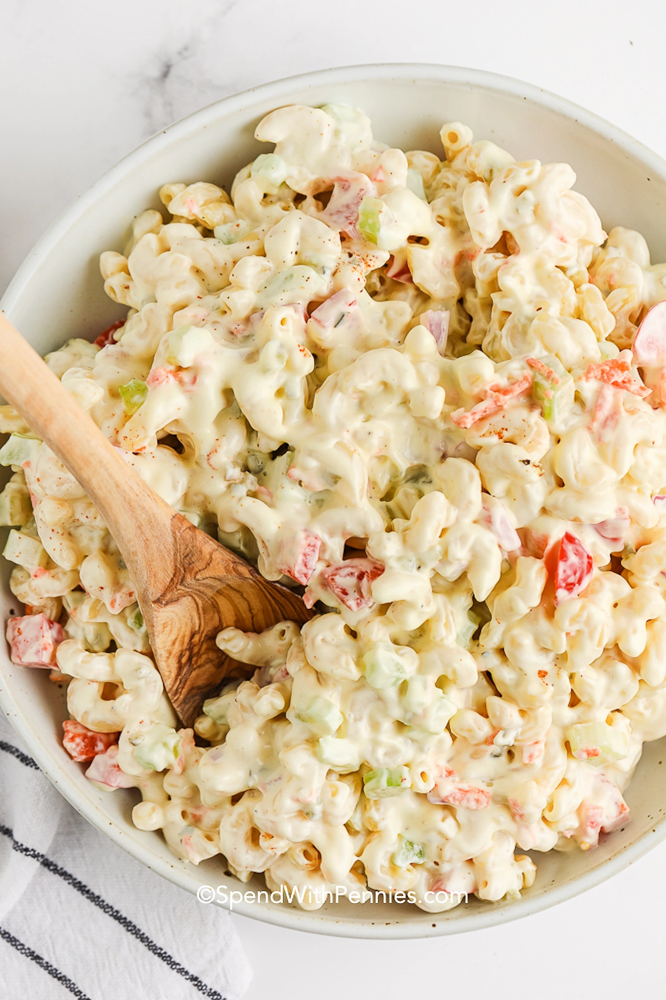

Macaroni Salad

Macaroni noodles hold a special place in my heart. I’m in love with mac and cheese and my
Mom always served elbows with rouladen gravy and of course this classic macaroni salad.
I
think the best macaroni salad recipe is a simple side that’s tasty, filling, and budget-friendly. It
goes with everything from burgers to fried chicken.
Ingredients:
Ingredients in macaroni salad include elbows (or ditalini), a creamy dressing, and some add-ins
for flavor and texture. For the best macaroni salad, use a variety of add-ins with different
textures and colors.
Here are a few things I like to add to Macaroni Salad:
- Fresh & Crisp – celery, shredded carrots, red bell peppers, fresh parsley, or fresh dill
- Salty – Try adding cheese, bacon, ham, sliced olives, or even capers.
- Savory– Green or red onions, dill pickles, garlic powder, boiled eggs, chopped or shredded cheddar.
- Sweet– Baby peas, pineapple, sweet bell peppers, sweet pickles, or extra pickle relish.
Macaroni Salad Dressing
This macaroni salad dressing is a very simple mayonnaise-based dressing and takes just a
couple of minutes to prepare.
- Mayonnaise (or dressing) is the base of this dressing recipe. To lighten up the dressing you
can substitute half of the mayonnaise for Greek yogurt.
- White vinegar or cider vinegar add tang. Swap for dill pickle juice if you’d like.
- Sweet pickle relishand a pinch of sugar add sweetness to balance the vinegar. Sugar
substitutes work well in this recipe or swap sugar for a splash of sweet pickle juice.
- Seasonings are kept simple with a touch of prepared or dijon mustard, salt & pepper to taste.
How to Make Macaroni Salad
As easy as 1,2,3...
Steps:
- Cook Pasta Boil, drain, and cool the macaroni per the recipe below.
- Prepare Add-Ins: While the macaroni is boiling, chop the veggies or add-ins.
- Mix & Chill Mix the dressing ingredients and toss with the macaroni and add ins..
- Sweet– Baby peas, pineapple, sweet bell peppers, sweet pickles, or extra pickle relish.